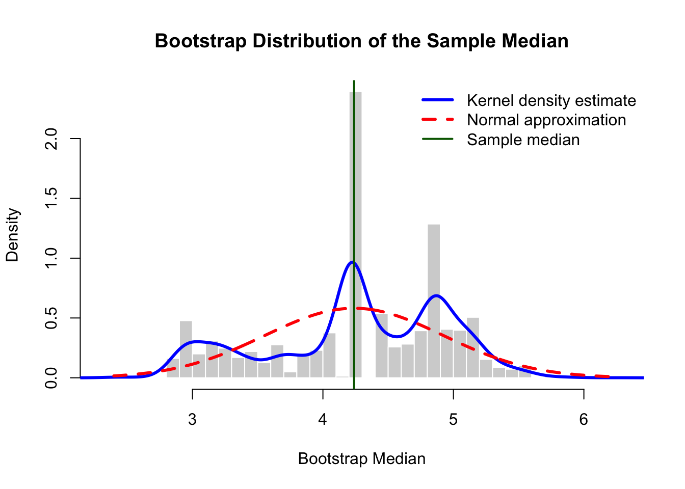

In the previous chapter we discussed several statistical tests applied to a sample from a population. The sample is assumed to be independent and identically distributed, and all values are assumed to be a random sample from a Normal distribution.
Non-parametric methods in statistics provide a versatile and robust alternative to traditional parametric techniques, particularly when the assumptions of normality or other underlying distributions cannot be met. These methods are characterized by their flexibility and ability to analyze data without making specific assumptions about the population distribution. Examples of non-parametric methods include the Wilcoxon signed-rank test, which is a non-parametric alternative to the paired t-test when assessing differences between paired observations; the Mann-Whitney U test, used for comparing two independent groups, and the Kruskal-Wallis test, which extends the comparison to multiple groups. These techniques are valuable tools for researchers and analysts working with real-world data, as they offer reliable solutions in scenarios where parametric methods may fall short.
4.1 Introduction to One-Sample Rank Tests
One common scenario where rank tests shine is when dealing with skewed or non-normally distributed data. In such cases, traditional parametric tests like the t-test or ANOVA may produce unreliable results. Rank tests offer a solution by focusing on the ranks or orders of observations, making them robust to distributional assumptions and potential outliers.
For example, consider a study evaluating the effectiveness of a new medication. The response variable is the level of pain relief reported by patients on a scale from 1 (no relief) to 10 (complete relief). The data collected may not follow a normal distribution, and the scale itself is ordinal rather than continuous. In this situation, a rank-based test like the Wilcoxon signed-rank test for paired data or the Mann-Whitney U test for independent samples can provide a more appropriate analysis, comparing the central tendency of pain relief between groups or before and after treatment without relying on distributional assumptions.
In essence, rank tests offer a valuable tool for statisticians and researchers when dealing with real-world data that doesn’t conform to the idealized assumptions of parametric methods. They provide a robust and reliable means of drawing valid conclusions, even in challenging situations.
4.1.1 Wilcoxon Signed-Rank Test
The signed rank tests uses the difference between the sample values from the proposed median \(x_i-m\) , but also uses the size of the difference to calculate a rank. This tests assumes that the sample is coming from a symmetrical distribution.
A simple example
If the differences of the sample from the proposed median are: -1.6, 2.3, -5.1, 3.9, the sorted values without considering the signs are: -1.6, 2.3, 3.9, -5.1, with ranks 1, 2, 3 and 4. The values of the signed rank test statistic (\(TS\)) are the ranks for the negative values, this is: \(TS=1+4=5\). Other options are to use the positive value ranks: \(TS=2+3\).
A large value of TS would indicate more observations below the median than expected under \(H_0\).
When ties are present in the data, they are removed and the sample size is adjusted accordingly.
When \(n\) is moderately large, the TS statistic has an Normal distribution under the Null hypothesis, with mean and variance: \[E[TS]=\frac{n(n+1)}{4}\]\[Var[TS]=\frac{n(n+1)(2n+1)}{24}\]
Assume that \(TS=t\). The Signed Rank Test rejects the Null hypothesis for a two-tailed test if:
\(P(TS\leq t) \leq \alpha/2\)
\(P(TS\geq t) \leq \alpha/2\)
In R, the function wilcox.test(.) can be used for testing the location parameter for a single population, using the parameter \(\mu=\ldots\) in the function call.
Important: The sign test does not need any assumption about the shape of the distribution of the data. The Wilcoxon Signed Rank test requires that the data has a symmetric distribution.
Example
In this example, we want to compare the mean duration and mean intensity of historical heat waves in the city of Champaign, Illinois before the year 2005 and after 2005.
The data is available in the file hw_factors.csv.
library(dplyr)library(tidyverse)library(ggplot2)library(descstatsr)library(goftest)library(BSDA)hwf<-read.csv("data/hw_factors.csv")# Mean Intensityhwf$period<-ifelse(hwf$year<2005,"Before 2005","After 2005")hwf %>%filter(year<2005) %>%summarize(mean_int_b2005=mean(mean_intensity))
hwf1<-hwf %>%filter(year<2005)hwf2<-hwf %>%filter (year >=2005)# One-sample t-test for mean intensityt.test(hwf1$mean_intensity,mu=5,alternative="l")
One Sample t-test
data: hwf1$mean_intensity
t = -1.1072, df = 14, p-value = 0.1434
alternative hypothesis: true mean is less than 5
95 percent confidence interval:
-Inf 5.379885
sample estimates:
mean of x
4.356973
t.test(hwf2$mean_intensity,mu=5, alternative="l")
One Sample t-test
data: hwf2$mean_intensity
t = -1.3956, df = 19, p-value = 0.08947
alternative hypothesis: true mean is less than 5
95 percent confidence interval:
-Inf 5.16418
sample estimates:
mean of x
4.313146
# Two-sample t-test for mean intensity# By default variances are not assumed equalt.test(hwf1$mean_intensity,hwf2$mean_intensity)
Welch Two Sample t-test
data: hwf1$mean_intensity and hwf2$mean_intensity
t = 0.057571, df = 29.948, p-value = 0.9545
alternative hypothesis: true difference in means is not equal to 0
95 percent confidence interval:
-1.510998 1.598652
sample estimates:
mean of x mean of y
4.356973 4.313146
# Sign-test (One-sample) for mean durationSIGN.test(hwf1$mean_duration, md =3.5, alternative='two.sided')
One-sample Sign-Test
data: hwf1$mean_duration
s = 5, p-value = 0.3018
alternative hypothesis: true median is not equal to 3.5
95 percent confidence interval:
2.148474 3.940611
sample estimates:
median of x
3.2
Achieved and Interpolated Confidence Intervals:
Conf.Level L.E.pt U.E.pt
Lower Achieved CI 0.8815 2.8333 3.6667
Interpolated CI 0.9500 2.1485 3.9406
Upper Achieved CI 0.9648 2.0000 4.0000
One-sample Sign-Test
data: hwf2$mean_duration
s = 10, p-value = 1
alternative hypothesis: true median is not equal to 3.5
95 percent confidence interval:
2.779118 4.000000
sample estimates:
median of x
3.535714
Achieved and Interpolated Confidence Intervals:
Conf.Level L.E.pt U.E.pt
Lower Achieved CI 0.8847 3.0000 4
Interpolated CI 0.9500 2.7791 4
Upper Achieved CI 0.9586 2.7500 4
# Wilcoxon Signed-Rank test (One-sample) for mean duration#Before 2005wilcox.test(hwf1$mean_duration,mu=3.5)
Wilcoxon signed rank exact test
data: hwf1$mean_duration
V = 44, p-value = 0.3845
alternative hypothesis: true location is not equal to 3.5
#After 2005wilcox.test(hwf2$mean_duration,mu=3.5)
Wilcoxon signed rank exact test
data: hwf2$mean_duration
V = 104, p-value = 0.9919
alternative hypothesis: true location is not equal to 3.5
4.2 Rank Tests with Two or More Samples
Assume we have data on precipitation projections from two Global Circulation Models (GCM1 and GCM2) for the period 2070- 2100 (last 30 years of this century), and we want to test the hypothesis that the location parameters for the two distributions (\(\tilde{\mu}_1\;\;\mbox{and}\;\;\tilde{\mu}_2\)) are the same. We assume that the two samples from models GCM1 and GCM2 are not independent samples, since the models essentially have similar differential equations to represent the climate-land-ocean interactions.
We can calculate the differences between each pair of observations for every time step \(x_i -y_i\), and apply the Wilcoxon Rank test or the Sign test.
For a comparison of the location parameters among 3 or more populations we can use the Kruskal-Wallis test. The parametric parallel of this test is the one-way ANOVA model that will be discussed later.
4.2.1 Wilcoxon Rank-Sum test
The Wilcoxon Rank Sum Test, also known as the Mann-Whitney U test, is a non-parametric test used to assess whether there is a difference between two independent groups. It doesn’t assume normality and it is appropriate when the data may not meet the assumptions of a t-test.
We want to show that observations from one population \(x_1, x_2,\ldots, x_{n_1}\) tend to be larger (or smaller) than observations from another population \(y_1, y_2, \ldots, y_{n_2}\).
It is assumed that the distribution \(F_1\) of \(X\) and \(F_2\) of \(Y\) are identical in shape and only differ by location. This is equivalent to say that there is a shift in location.
In this case we set up the hypothesis (more general set up): \[H_0: F_1=F_2\;\;\mbox{vs.}\;\; H_a: F_1> F_2\] (one-sided) or \[H_0: F_1=F_2\;\; \mbox{vs.}\;\; H_a: F_1 > F_2\;\;\mbox{or} \;\; H_a: F_1 < F_2 \] (two-sided).
If the data support the alternative hypothesis \(H_a: F_1< F_2\) we can say that random variable \(Y\) has stochastic dominance over random variable \(X\).
The steps for the test are as follows (assume no ties are present): 1. Rank all \(N=n_1+n_2\) observations in ascending order; 2. Sum the ranks of the \(x's\) (\(W_1=\omega_1\)) and the ranks of the \(y's\) (\(W_2=\omega_2\)); 3. Reject \(H_0\) if \(\omega_1\) is large and equivalently \(\omega_2\) is small.
The distributions of \(W_1\) and \(W_2\) are not the same when the sample sizes \(n_1\) and \(n_2\) are not equal.
4.2.2 Wilcoxon rank sum test and Mann-Whitney test
The Mann-Whitney U test is another non-parametric test available when you want to compare two distributions. The probability distribution of the random variable \(W\) (sum of the ranks) is tabulated. The Mann-Whitney test statistic \(U\) is related to the Wilcoxon rank sum test. In the Mann-Whitney test, the steps are as follows:
Calculate \(u_1\)= number of pairs in which \(x_i>y_j\) for all possible pairs \(i\) and \(j\); and \(u_2\)= number of pairs in which \(x_i<y_j\) for all possible pairs \(i\) and \(j\). There are \(n_1n_2\) possible pairs and \(u_1+u_2=n_1n_2\).
Reject \(H_0\) if \(u_1\) is large or \(u_2\) is small.
The Wilcoxon rank sum test and Mann-Whitney test are related in the following way: \[u_1=\omega_1 - \frac{n_1(n_1+1)}{2}\;\;\mbox{and}\;\;u_2=\omega_2 - \frac{n_2(n_2+1)}{2}\]
The upper tail probability distributions for the \(U\) and \(W\) statistics under \(H_0\) are tabulated. An \(\alpha\)-level test rejects \(H_0\) if \(P-value\leq \alpha\)
Example
Compare mean heat wave’s duration before and after 2005
We want to check whether there has been a shift in the distributions of the mean heat wave’s duration after 2005.
We will use the function wilcox.test(x,y), where \(x\) is the sample vector from the random variable \(X\), and \(y\) is the sample vector from random variable \(Y\).
Wilcoxon rank sum exact test
data: hwf1$mean_duration and hwf2$mean_duration
W = 130.5, p-value = 0.5237
alternative hypothesis: true location shift is not equal to 0
For a comparison of the location parameters among 3 or more populations we can use the Kruskal-Wallis test.
4.2.3 Kruskal-Wallis test
The Kruskal-Wallis test is a powerful non-parametric statistical test designed to address situations where the assumptions of normality and homogeneity of variances required by traditional analysis of variance (ANOVA) cannot be met. This test is particularly useful when you have three or more independent groups or conditions and you want to determine whether there are statistically significant differences in the central tendencies of these groups.
In cases where the data is not normally distributed or the group variances are unequal, the Kruskal-Wallis test provides a reliable alternative to traditional ANOVA. Instead of relying on means and variances, the Kruskal-Wallis test operates on the ranks of the data, making it robust to deviations from normality and homoscedasticity.
Imagine a clinical trial comparing the pain relief efficacy of three different treatments. Patients’ pain relief scores may not follow a normal distribution, and the variability in responses between treatments could be quite different. In this scenario, the Kruskal-Wallis test allows researchers to determine whether there are statistically significant differences in pain relief among the treatments without the need for stringent parametric assumptions.
In summary, the Kruskal-Wallis test is a valuable tool in situations where you need to compare multiple groups and the underlying data does not meet the assumptions of ANOVA. It provides a reliable means of detecting differences in central tendencies across groups while accommodating the realities of real-world data. When the number of groups is equal to two, the Kruskall-Wallis test reduces to the Wilcoxon Rank Sum test.
Example
Increased greenhouse gas concentrations in the atmosphere as a consequence of human activities, might modify the behaviour of rainfall extreme events. To investigate that, we use data from the CMIP5 project consisting of simulated values of daily rainfall for three different scenarios: historical conditions, RCP4.5 and RCP8.5 climate scenarios proposed by the IPCC, being the last one the worst case scenario with the highest radiative forcing level (8.5 \(Watts/m^2\)) for the projected future climate. We want to study potential changes in the location parameter of the maximum annual daily rainfall. The Generalized Extreme Value (GEV) distribution (to be discussed in Chapter XX) was fitted to the simulated daily annual maximum for the three experiments (historical, RCP4.5 and RCP8.5) using simulated data from 30 General Circulation Models (GCMs). The location, scale and shape parameters of the GEV fitted models were estimated using maximum likelihood; and the Kruskal-Wallis test was used to assess whether significant differences in the model parameters for the three experiments are observed.
4.3 Non-parametric correlation measures
4.3.1 The Spearman’s rank correlation
The Spearman’s correlation (\(\rho_S\)) measures the strength of a monotonic relationship between two variables. When the relationship between two variables is non-linear but there is a monotonic relationship between then, the Spearman’s correlation coefficient is a better measure of the association between the two variables. This a non-parametric measure of correlation and it is calculated as the Pearson correlation coefficient between the ranks of the two variables with sample estimate:
where cov is the covariance between the ranks of the two variables and \(S_{rank(.)}\) is the standard deviation of the ranks for each variable. This formula is equivalent to the Pearson correlation formula between the ranks of the two samples.
The significance of \(\rho_S\) can be tested by using the R function cor.test by setting the function parameter method=spearman.
4.3.2 Kendal’s tau correlation
It is more robust and efficient than the Spearman’s correlation, but more difficult to interpret: Considering all possible pairs \((i,j)\) from the sample. The Kendall’s \(\tau\) quantifies the difference between the percentage of all discordant (ranks disagree) and concordant pairs (ranks agree) in the data: \[\tau_{xy}=\frac{2}{n(n-1)}\sum_{i<j} sign(x_i-x_j)\times sign(y_i-y_j)\]
Kendall’s \(\tau\) is recommended for small sample size or when there are many ties in the data. A significance test is also implemented using the cor.test function with method=kendall.
When there relationship between two variables is highly non-linear or there is presence of outliers, the Spearman and Kendall’s \(\tau\) are recommended over the Pearson correlation coefficient.
4.4 Bootstrap standard errors and Confidence Intervals
Another class of non-parametric methods, known as re-sampling methods, are based on drawing random samples from the given sample to make inferences about the population. An example of this is the bootstrap method, which is useful to calculate the accuracy of the sample parameter estimates and confidence intervals of the true parameter values. Usually these accuracy estimates are measured through the standard errors. Standard errors also provide a measure of the uncertainty of the estimates from the sample as well as the confidence intervals.
If we have a sample \(x_1,x_2,\ldots,x_n\) from a normal distribution with mean \(\mu\) and variance \(\sigma^2\), we can estimate \(\mu\) as \(\hat{\mu}=\bar{x}\). A measure of uncertainty of this estimate is given by the standard error of \(\bar{x}\) which is calculated as \(se(\bar{x})=s/\sqrt{n}\) where \(s\) is the sample standard deviation. Knowing the se allows us to confirm that the sample estimate ($\bar{x}$) is going to be one se away from its true value 68\% of the times, two se away from its true value, 95\% of the times.
For many estimates we can calculate the standard errors exactly, but there are many model parameter estimates for which their standard error is more difficult to obtain. Bootstrap methods are a great alternative in these cases.
Example: Calculate the standard error of the sample median using Bootstrap
In order to calculate the standard error of the sample median of a given sample, we do not require to know the probability distribution of the sample. We can use bootstrap to re-sample several times from the original sample. We can calculate the median for each sample and estimate the standard deviation of all meadian estimates. This standard deviation is a bootstrap estimator of the standard error of the sample median.
We can demonstrate this procedure using the following R code. Suppose that your data is stored in a vector \(x\). We can re-sample x 5,000 times with replacement, and obtain the median for each sample:
# Original datax <-c(12, 15, 18, 20, 21, 24, 30, 35, 40)# Number of bootstrap samplesB <-5000# Bootstrap mediansboot.medians <-replicate(B,median(sample(x, size =length(x), replace =TRUE)))# Bootstrap estimate of SE(median)se.median <-sd(boot.medians)se.median
[1] 4.279005
We can use a simulated data set:
set.seed(123)# Sample from a skewed distributionx <-rexp(100, rate =0.2)# Sample medianmedian(x)
The following object is masked from 'package:lattice':
melanoma
# Statistic of interestmedian.fun <-function(data, indices) {median(data[indices])}# Bootstrapresults <-boot(data = x,statistic = median.fun,R =5000)# Bootstrap SEresults$t0 # original median
[1] 4.23877
sd(results$t) # bootstrap SE
[1] 0.6864157
Confidence interval for the median
Once the standard error is estimated, we can calculate the confidence interval for the median. A percentile confidence interval is calculated using the option perc of the function boot.ci from the boot library. This function generate different types of nonparametric confidence intervals, including the studentized bootstrap interval, the bootstrap percentile interval, and the adjusted bootstrap percentile (BCa) interval.
The types of confidence intervals to be calculated can be defined with argument type:
boot.ci(results, type ="perc")
BOOTSTRAP CONFIDENCE INTERVAL CALCULATIONS
Based on 5000 bootstrap replicates
CALL :
boot.ci(boot.out = results, type = "perc")
Intervals :
Level Percentile
95% ( 2.913, 5.336 )
Calculations and Intervals on Original Scale
The probability distribution of the bootstrap sample estimates is an approximation of the sampling distribution of the estimate.
# Kernel density estimatekd <-density(results$t)# Plot histogram as densityhist(results$t,probability =TRUE,breaks =30,col ="lightgray",border ="white",main ="Bootstrap Distribution of the Sample Median",xlab ="Bootstrap Median")# Add kernel density estimatelines(kd,col ="blue",lwd =3)# Add asymptotic normal approximationx.grid <-seq(min(results$t),max(results$t),length.out =500)lines(x.grid,dnorm(x.grid,mean =median(x),sd =sd(results$t)),col ="red",lwd =3,lty =2)# Add vertical line at sample medianabline(v =median(x),col ="darkgreen",lwd =2)legend("topright",legend =c("Kernel density estimate","Normal approximation","Sample median"),col =c("blue", "red", "darkgreen"),lwd =c(3, 3, 2),lty =c(1, 2, 1),bty ="n")

cat("Bootstrap SE of median =", round(sd(results$t), 4), "\n")
Bootstrap SE of median = 0.6864
We can also calculate the bias between the bootstrap estimate and the original sample estimate.